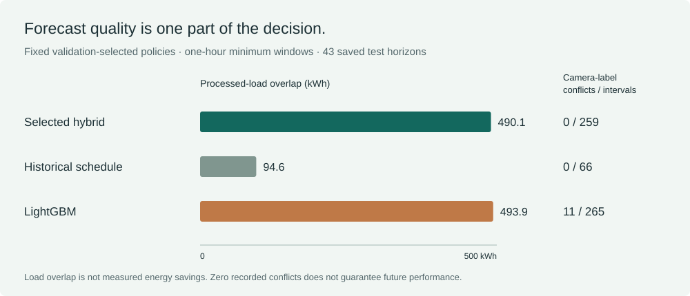

The question behind the rule
A single interval with a high empty score may be too short to matter for building planning. Our offline study asks how forecasts translate into sustained empty periods, how often those recommendations conflict with recorded occupancy, and what processed building load overlaps them.
The records come from the cleaned LBNL Building 59 release. This example uses saved predictions and 43 non-overlapping test horizons, each containing 96 fifteen-minute intervals. The 4,128 intervals are distinct from the larger, overlapping forecast comparison in the manuscript.
Keep a continuous run above the threshold
The selected hybrid combines historical-schedule, LightGBM, and compact Transformer scores with weights of 0.15, 0.60, and 0.25. Its reported rule keeps runs at or above 0.875 lasting at least one hour, or four consecutive intervals. A run cannot cross the boundary between two daily horizons.
The study selected the weights and thresholds using validation data. The score is uncalibrated, so 0.875 should not be read as an 87.5% probability of physical absence. The completed midnight-labelled input bin becomes available at 00:15; the saved policy horizon starts at that boundary.

Recompute the reported comparison
| Policy | Threshold | Windows | Intervals | Conflicts | Load overlap (kWh) |
|---|---|---|---|---|---|
| Selected hybrid | 0.875 | 14 | 259 | 0 | 490.1 |
| Historical schedule | 0.950 | 12 | 66 | 0 | 94.6 |
| LightGBM | 0.950 | 19 | 265 | 11 | 493.9 |
A conflict is a recommended interval whose reference camera label says occupied. The load calculation sums processed HVAC-plus-lighting load only where the rule recommends and the camera label says empty. It does not measure an intervention or the amount of load a controller could remove.
Try it, then check the calculation
- Open the browser demo. It starts with the reported hybrid rule and shows the aggregate results above.
- Choose LightGBM to see its own reported threshold. Change the threshold or minimum duration to explore the saved records. The status label identifies those changes as exploratory.
- Choose an example date and expand its table. The date changes the plotted example; the aggregate results still cover all 43 horizons. Use Copy link to share the same settings and date.
- Open the Python notebook and run its cells. The core calculation uses Python's standard library and compact source records. It recomputes the three fixed rows without retraining models. Plotting is optional.
To work offline with standard Python, download and extract the replay kit, then run python replay.py --receipt reproduction-receipt.json --csv comparison.csv. It includes the compact records and checks their file hashes. Python 3.10 or later is required; no training dependencies or Jupyter installation are needed.
If you try either path, report the environment, commit or source hashes, commands, and observed outputs. You may review and attach the local receipt. Failed attempts help identify problems in the instructions. A receipt is a self-report and uploads nothing automatically.
What the example establishes
The hybrid found 14 windows with zero recorded conflicts in this saved test period. That observation cannot guarantee future conflict-free recommendations, verify physical absence, or establish energy savings. Changing settings on these already inspected records cannot establish a new confirmed improvement.
Source timestamp and imputation provenance, corrected model initialization, and evaluation on untouched data remain necessary for a prospective study. Equipment and comfort constraints need further testing before any building-control claim.
Check the evidence
Paper and citation · Author manuscript · Canonical policy table · Compact records with source hashes · Full claim boundaries